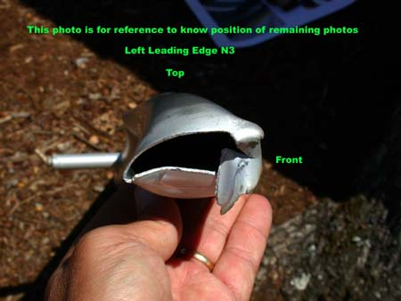
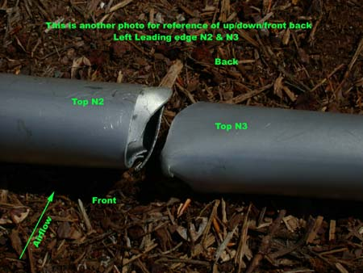

Inspection report
|
|
 
|
Inspection performed and pictures taken by G.W.Meadows on April 11, 2002.
On the basis of the information we've received about the above wing, we can draw conclusions as follows:
First, and most important: If we have a look at the pictures (see attached), it is apparent that the tube broke in the direction from top down, which is impossible in normal flight, as in flight stress is directed up and backwards.
Second: The characteristics of the broken edge of the tubing, allows us to state that this tube in the place of breakage was free from cracks or significant scratches that could have caused failure of the tube. The nature of the LE No.3 tube section deformation confirms that the tube has broke under the impact of breaking load for this certain size of the tube. Had there been a crack, no deformation of the kind would occur either to the LE tube No.3 or, all the more so, to the adjoining LE tube No.2. All of our controlled test breaking of the same configuration of leading edge during this investigation has produced the exact same result.
Information we have about this wing and about the accident itself is not enough to tell more about the reasons of the tragic accident, but we know enough to state with absolute confidence that the tube quality was not the reason for it.
We'd also like to inform you that since our statement of readiness to replace tubing free of charge, should cracks be discovered in it, published in March, not a single tube with a crack has been presented. We have been receiving pictures with anodization marks (merely cosmetic defects having no influence on the tube properties), with signs of corrosion, but no manufacturing defects have been discovered thus far.
In the course of our investigation we learned that in the USA requirements of the trike wing maintenance manual in the part of periodical checks of the frame and sail, etc. very often are not observed. Moreover, we even became aware of the fact when a trike wing was stored outdoors for months, with snow and rain falling on it, sunrays killing the sail, etc. Please, mind that NO trikes were ever meant to be handled like that.
The accident reminds us all that it's necessary to check the wings (any wings, regardless of the manufacturer) regularly. This concerns any wings, regardless of the manufacturer, whether they are of Ukrainian, US, French or other origin. We cannot understand carelessness in pilots' attitudes towards technical condition of their wings, which means in fact not caring about their lives.
Alexander Voronin
Director Aeros Ltd.
Return to Main page